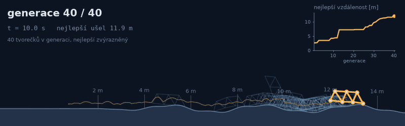
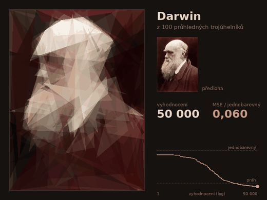
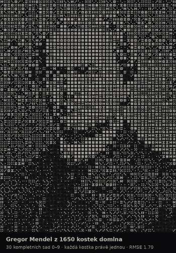
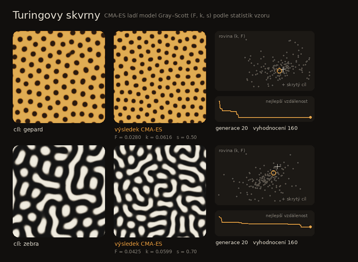
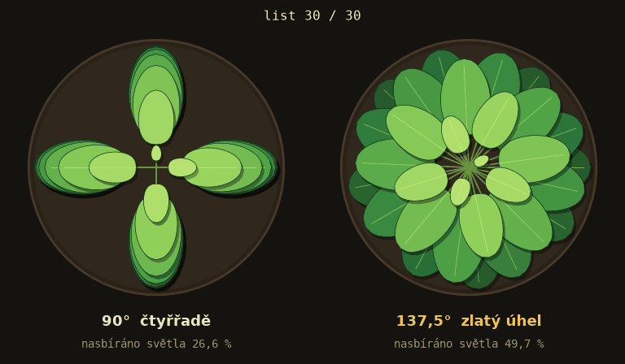
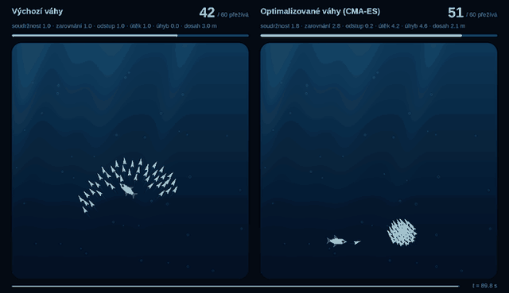
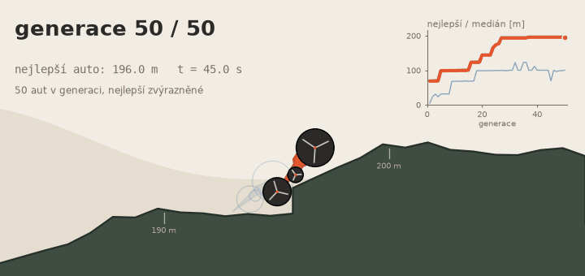

Evoluce plazícího tvorečka
Tvoreček z kuliček a tyček umí jen rytmicky stahovat svaly. Najděte mu evolucí takový rytmus, aby se po zvlněném terénu doplazil co nejdál – a podívejte se, jestli opravdu leze, nebo jen podvádí fyziku.
Otevřené úlohy na hraní: dostanete data nebo simulátor, skript
ukaz_start.py s počátečním stavem a animaci pro inspiraci. Metodu,
vylepšení i vzhled výsledné animace vymyslíte sami. Každý bonus je za 2 body nad
30 bodů projektu, tým může získat nejvýš 2 bonusy (4 body).

Tvoreček z kuliček a tyček umí jen rytmicky stahovat svaly. Najděte mu evolucí takový rytmus, aby se po zvlněném terénu doplazil co nejdál – a podívejte se, jestli opravdu leze, nebo jen podvádí fyziku.

Poskládejte Darwinův portrét ze stovky poloprůhledných trojúhelníků. Optimalizace v tisícirozměrném prostoru bez gradientu, kde si můžete hrát s tím, co a jak mutujete – a výsledkem je animace, na kterou se dobře kouká.

Portrét zakladatele neurovědy utkaný z černé nitě napnuté mezi 180 hřebíky. Vyberte ze 14 490 možných tětiv nejvýš 2000 tak, aby z dálky vznikl obličej – hladově, přes LP relaxaci, nebo úplně po svém.

Složte portrét Gregora Mendela z kompletních sad domina, každou kostku právě jednou. Zblízka hromada teček, z dálky obličej – a k tomu otázka, proč tak celočíselná úloha možná vůbec nepotřebuje celočíselné proměnné.

Gepard a zebra dostali kožich od stejné chemie, jen s jinými konstantami. Zkuste z obrázku vzoru vyladit konstanty reakčně-difuzního modelu – zašuměný a drahý černý box, kde nejzajímavější otázka zní, co vlastně znamená „podobný vzor“.

Vypěstujte v počítači rostlinu, která ze svého květináče nachytá co nejvíc světla za co nejmenší cenu. A cestou zjistěte, jestli je slavný zlatý úhel 137,5° mezi listy opravdu optimální – nebo jen hodně dobrý.

Hejno ryb nemá velitele, jen pár jednoduchých pravidel. Hrajte si s váhami těchto pravidel tak, aby predátorovi uniklo co nejvíc ryb – zašuměná černá skříňka, u které se snadno necháte oklamat jedním šťastným útokem.

Z náhodných vraků z paprsků a kol vypěstujte evolucí autíčko, které přejede kopce, schody i díry. Návrh tvaru bez gradientu, jen se simulací – a na výsledek se dobře kouká.